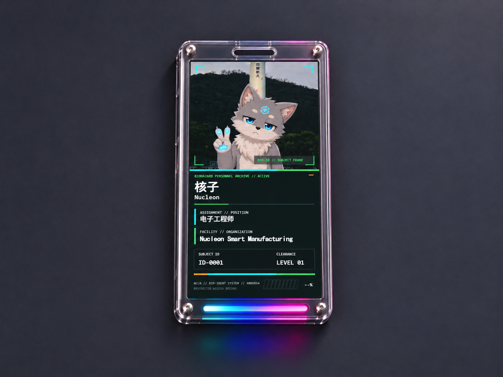

PROGRAMMABLE BADGEUNRELEASED
电子工牌
一款结合身份展示与电子交互功能设计的可编程电子工牌，采用透明亚克力、3D 打印结构件与电子硬件组合而成，整体采用极客工业风格设计。胸牌可显示姓名、身份信息及二维码等内容，并配有可编程 RGB 状态灯，可根据不同应用显示设备状态或交互效果。相比传统静态工牌，它不仅承担身份展示功能，也是一台可以随身佩戴的小型可编程电子终端。
- 方向
- 智能穿戴 / 身份交互
- 结构
- 透明亚克力 / 3D 打印
- 状态
- 未发布
MY PROJECTS

一款结合身份展示与电子交互功能设计的可编程电子工牌，采用透明亚克力、3D 打印结构件与电子硬件组合而成，整体采用极客工业风格设计。胸牌可显示姓名、身份信息及二维码等内容，并配有可编程 RGB 状态灯，可根据不同应用显示设备状态或交互效果。相比传统静态工牌，它不仅承担身份展示功能，也是一台可以随身佩戴的小型可编程电子终端。

把《Outer Wilds》里的信标灯带进现实。从结构、光效到手持体验，完成一件能真正点亮的游戏道具。

把 PCB、透明球罩和暖色灯光组合成一件桌面光物。内置电池，支持充电与触摸调光。
语音智能兽装项目，将语音交互能力融入兽装穿戴与现场展示，是 Nucleon 智能兽装的第二代版本。

把游戏中的大型灯泡做成可以真实点亮的实体道具，结合结构设计、LED 光源与供电控制。

结合小熊造型、RGB 灯光与触摸播放功能制作的桌面电子摆件，让纪念物也具有互动性。

面向户外使用的便携照明设计，支持双色温调光，并兼顾防水、磁吸固定与携带体验。
NUCLEON WEB UTILITIES
面向电子开发与工牌制作的浏览器工具，所有编辑与计算均在本地完成。
EVENT TIMELINE
全球创客的年度超级进化舞台
暨全球 AI 硬件创新生态大会
AI 无界，万物新生 / AI and More Things
暨电子工程师大会
万物皆可 AI / Enchant Everything with AI
向新而立 · 创无止境
星火会 · 助力全球硬件创新
RECENT UPDATES
主页完成视觉与内容审计：更新品牌标题、首屏对齐、小档案、商城、友链和响应式布局。
新增“电子工牌”项目与在线编辑器，支持身份信息、头像、主题、RGB 灯效和模板导出。
展会记录整理完成，收录 Maker Faire Shenzhen 与历届开源硬件星火会，并加入下一场展会倒计时。
小工具检索完成整合，统一收录电子工牌编辑器与 38 项 EE 计算器。
OPEN FILE / SOCIAL PROFILE

BIOHAZARD PERSONNEL ARCHIVE // ACTIVE
这里是核子，一名科技区工科福瑞，电子工程师，喜欢兽太（?）还有很多有趣的科学实验和电子产品，喜欢讨论好玩的电子技术话题，欢迎来扩列😋
OPEN CHANNELS
NUCLEON MINI SHOP
FRIEND LINKS